LAFVIN Extension Blocks
The LA_MBitCar blocks help your micro:bit control the smart car. You can make the car move, light up, play music, and read sensors.
Important
These blocks are not included in a new MakeCode project. They appear only after you add the LAFVIN car extension. For blocks that are already built into MakeCode, see Official MakeCode Blocks.
Before You Start
Find an outlined field with a down arrow.
Click it to open the menu shown under the block.
Click a white number to change its value.
1. Make the Car Move
{kind=link}
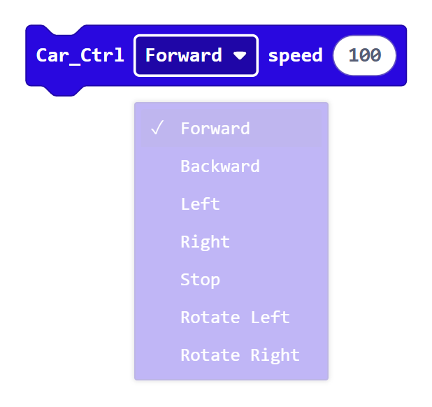
Click Forward to open all seven direction choices.
Choose a direction:
ForwardorBackwardmoves the car straight.LeftorRightmakes a turn.Rotate LeftorRotate Rightspins the car.Stopstops both wheels.
Speed can be set from 0 to 255.
Stop the car without a speed
{kind=link}
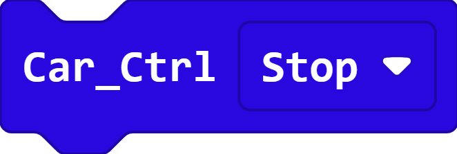
This shorter Car_Ctrl Stop block stops the car. It has no speed input
because stopping always sets both motors to zero.
2. Change the Front Lights
{kind=link}
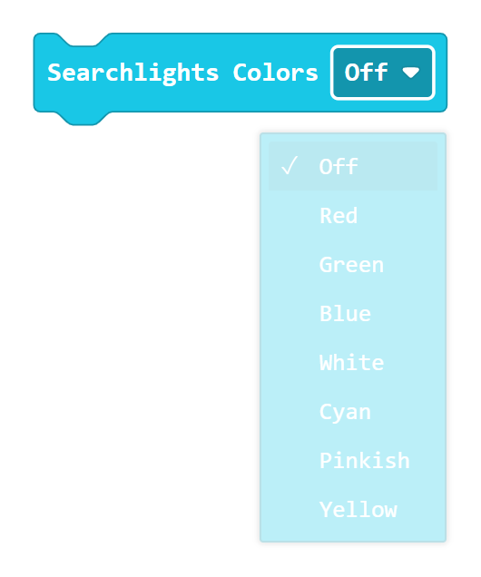
Click Off to open all eight front-light choices.
Choose Red, Green, Blue, White, Cyan, Pinkish,
Yellow, or Off.
3. Change the Lights Under the Car
Important
The blocks in this section appear in the Neopixel category. The LAFVIN extension installs that category automatically because the four lights under the car use NeoPixel LEDs. They are not included in a new MakeCode project before the LAFVIN extension is added.
Select the car’s four RGB lights
{kind=link}
The red RGB Lights value block represents the strip of four lights under
the car. Its rounded shape fits into the red socket of each NeoPixel action
block below.
Set one light’s color
{kind=link}
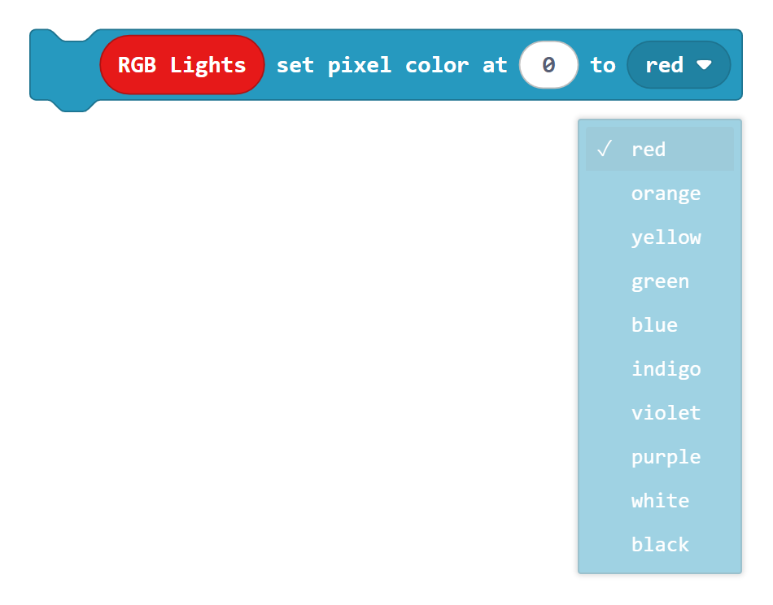
Click the color field to open all ten color choices.
The four lights under the car are numbered 0, 1, 2, and 3.
Choose a number to change one light. The color menu contains red,
orange, yellow, green, blue, indigo, violet,
purple, white, and black.
This block changes a stored color. Use show to send that change to the
real lights.
Show the stored colors
{kind=link}
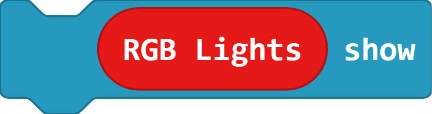
show sends all stored pixel colors to the four lights. Use it after one
or more set pixel color blocks.
Show one color on all four lights
{kind=link}
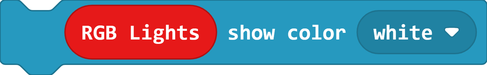
show color changes all four lights at once and displays the selected
color immediately. Its color field provides the same ten choices shown in
the set pixel color menu.
Change the brightness
{kind=link}
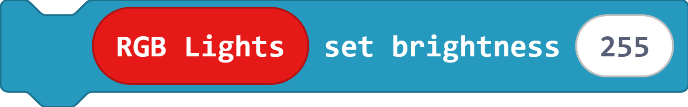
set brightness controls how bright the RGB lights appear. Use a value
from 0 for off to 255 for maximum brightness.
Clear the stored colors
{kind=link}
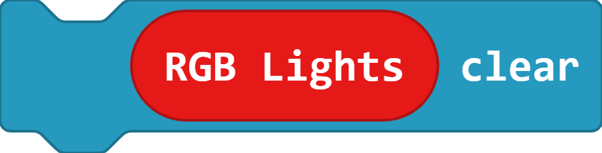
clear changes every stored pixel color to black. Use show afterward
when the cleared result must be sent to lights that are already on.
4. Play Music
{kind=link}
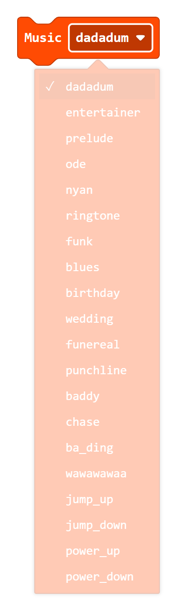
Click dadadum to see every built-in melody.
Choose a melody, and the car plays it once.
If you cannot hear anything, check the audio switch on the car board.
5. Control a Servo
{kind=link}
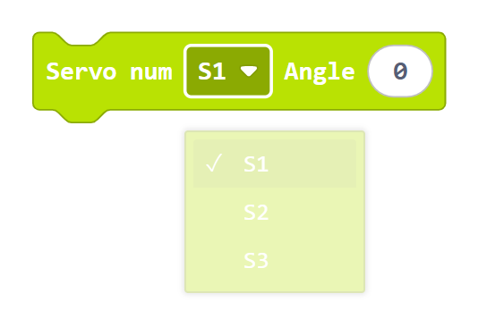
Click S1 to choose the servo socket.
Choose S1, S2, or S3 to match the socket used by the servo.
The angle can be from 0 to 180 degrees.
6. Read the Line Sensors
{kind=link}
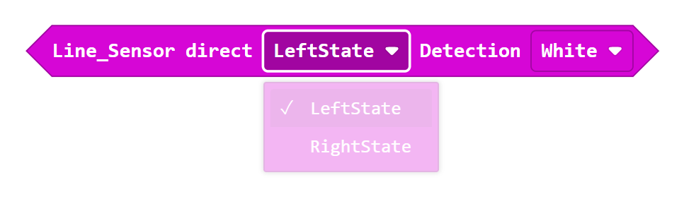
First click LeftState to choose the left or right sensor.
{kind=link}
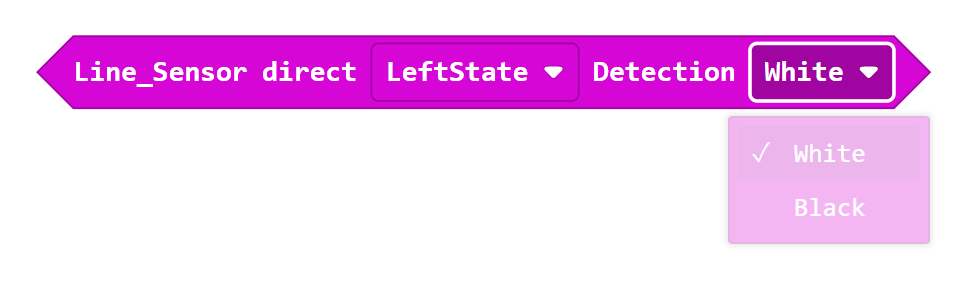
Then click White to choose a white or black surface.
The answer is either true or false, so this block fits inside an
if block. A line-following program checks both sensors again and again.
7. Measure Distance
{kind=link}
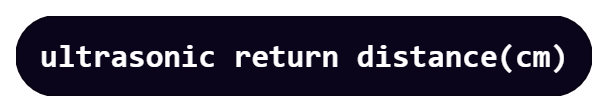
This block reports the distance in centimeters.
Put it inside show number to see the distance on the micro:bit display.
You can also compare the distance with a number to help the car avoid an
obstacle.
A result of 0 usually means that the sensor did not receive a clear echo.
8. Use the Remote Control
Connect the receiver
{kind=link}
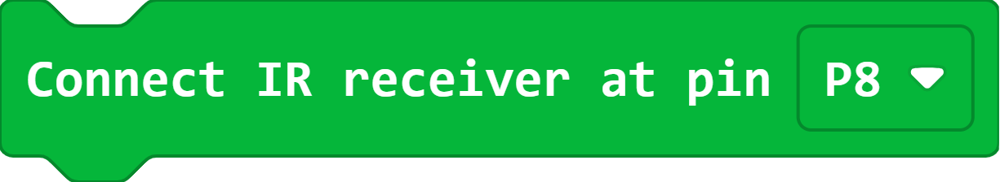
Put Connect IR receiver at pin P8 inside on start so the micro:bit
begins listening for remote-control signals. The receiver on this car is
connected to pin P8.
{kind=link}
{kind=link}